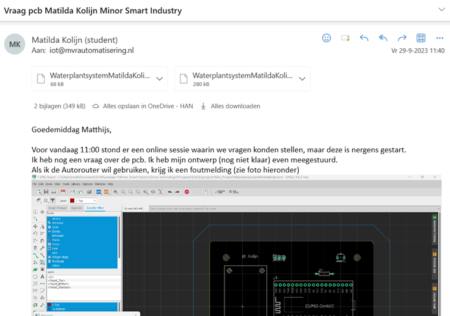

Smart Technology
Workshop 1, Aug 31, 2023
Tijdens de eerste workshop Smart Technology heb ik kennis gemaakt met Internet of Things. Met behulp van Arduino, benodigdheden gekregen tijdens deze workshop, gaan we de belichting en bewatering van planten monitoren. Hiervoor is het de bedoeling om met een lichtsensor en vochtigheidssensor aan de slag te gaan en een printplaat te ontwerpen. Daarnaast zullen we ook een 3D-omhulsel gaan ontwerpen en maken in het FabLab op de HAN in Arnhem en onderdelen leren solderen op de printplaat.
De eerste module heb ik afgerond, waarin een start is gemaakt met het programmeren van een blinking en fading LED (zie foto hieronder).
Daarnaast heb ik geleerd om een LDR aan te sluiten en uit te lezen (zie foto’s hieronder)
In de tweede module heb ik geleerd over het basic script lay-out en ben ik begonnen met het leren over sensoren en actuatoren. Zo heb ik de soil moisture sensor aangesloten en gemonitord (zie foto).
Workshop 2, Sept 7, 2023
Vandaag zijn we bij Smart Technology verder gegaan met het aansluiten van de verschillende sensoren, zoals de temperatuursensor (zie foto). Ook hebben we uitleg gekregen over de Arduino codes, die we tot nu toe alleen gekopieerd en geplakt hebben. Aan het einde van de workshop hebben we samen signalen bekeken van een afstandsbediening en autosleutels.
Workshop 3, Sept 14, 2023
Donderdag 14 september stond de volgende workshop Smart Technology ingepland. Helaas kon ik vandaag niet op tijd bij de workshop zijn, omdat ik naar het ziekenhuis moest. Om 14:00 kon ik aansluiten en heeft Matthijs mij nog uitleg gegeven over de printplaat die we in Autodesk Eagle moeten maken en ben ik thuis zelf aan de slag gegaan met het 4e deel van de cursus op robotexchange.
Workshop 4, Sept 7, 2023
Deze workshop werd op de HAN in Arnhem gehouden door Herold Cremer en ging over Additive Manufacturing. Tijdens deze workshop hebben we eerst toelichting gekregen op de opdracht en wat Additive Manufacturing inhoudt. Vervolgens zijn we aan de slag gegaan met tutorial 1 van Solidworks (zie foto’s hieronder). Als laatste hebben we nog een rondleiding gekregen door het FabLab.
Workshop 5, Sept 28, 2023
Voor deze workshop heb ik dinsdag 26 september thuis eerst nog tutorial 1 afgemaakt in Solidworks (zie foto hieronder).
Donderdag 28 september tijdens workshop 5 van Smart Technology workshop zijn we begonnen met presentaties over AM in industrie, defensie, medisch, sport.
De feedback die wij kregen op de gehouden presentatie (AM bij defensie) is als volgt:
- Waar staan de 3D-printers, waarom deze technieken (concrete voorbeelden) voor defensie, Oekraïne als voorbeeld nemen > waar zien we de toepassingen.
- Multi jet fusion > waarom zie je dat als toekomst voor massaproductie > snelle techniek vergeleken met andere > waarom sneller/ hoe komt dat? Kijk naar hoe zo’n laag wordt opgebouwd.
Daarna hebben we uitleg gekregen van Herold over de verschillende AM technologies en zijn we aan de slag gegaan met tutorial 2 van Solidworks (zie foto’s hieronder).
Extra vragenuur Matthijs, Sept 29, 2023
Online Teams meeting met Matthijs waarin we vragen konden stellen over de printplaat. Hier heb ik initiatief getoond, door allereerst te vragen of de meeting door ging in de klassenwhatsapp (zie foto), omdat Matthijs nergens, voor ons in ieder geval niet zichtbaar, een meeting had gestart.
Vervolgens heb ik ook een Teams bericht gestuurd naar Hubèrt. Toen ik geen/geen duidelijke reactie kreeg, heb ik Matthijs een mail gestuurd met daarin mijn vraag (zie foto hieronder).
Uiteindelijk bleek dat Matthijs in een ander kanaal belde en is het gelukt om via Teams alsnog mijn vragen te stellen aan Matthijs en deze meteen op te lossen.
Workshop 6, Okt 5, 2023
Tijdens de workshop van Smart Technology zijn we begonnen met de aanvullingen op de presentaties van vorige week. Daarna zijn we aan de slag gegaan met de behuizing (3D-printen) voor het smartwaterplantsysteem door middel van de handleiding die op Moodle staat. Als laatste hebben we uitleg gekregen over de werkwijze van Fablab met daarbij tips en tricks voor het daadwerkelijk 3D-printen van onze ontwerpen (zie foto’s).

Workshop 7, Okt 5, 2023
Tijdens deze workshop op 15 november hebben we uitleg gekregen over de kostenstructuur van 3D-printen (grootste kosten: afschrijving op je machine, materiaalkosten). Vervolgens hebben we uitleg gekregen over de workflow van het 3D-printen voor ons bakje:
- Exporteren naar STL (2 aparte SDL files: bakje en dekseltje) op part niveau
- Ultimaker Cura app openen (support en adhesion on zetten)
- File > open > positioneren > infill ongeveer 20%
- Slicen
Tip: Solid bodies > deksel en bakje apart opslaan (kan je selecteren en opslaan als part in Solidworks, vervolgens STL en in Cura laden; je kan ook op het part staan en allebei los opslaan als part).
Vervolgens heb ik de workshop solderen gevolgd. Hier heb ik Tom nog geholpen met solderen, omdat het bij hem niet lukte (competentie: anderen helpen groeien).
Eindresultaat
In onderstaande video is mijn werkende smartwaterplantsysteem te zien.
Met bewijs dat de data ook naar InfluxDB geschreven wordt:

Ik ben supertrots op het eindresultaat en had van te voren nooit bedacht dat ik zelf een smartwaterplantsysteem werkend zou kunnen maken. Van het zelf ontwerpen van een printplaat (1), een behuizing/bakje (2) voor mijn smartwaterplantsysteem en het solderen (3) en coderen (zie eindresultaat bij de workshop smart connection) ervan.